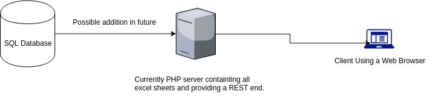

Welcome to The Replica Project's Documentation
If you are interested to look into the project it can be found here. From here on it will be technical details about the project.
Prerequisite Knowledge Required
We assume that anyone who is reading this documentation has knowledge on the following technologies.
- Javascript
- PHP
- HTML
- Bootstrap 4
- D3.js
- Leaflet.js
- Jquery
- Highcharts
- Datatables 4
- CSV Data
- CSS
- Async (A asynchronous utility in javascript)
- JSON
If you don't have prior knowledge, we would recommend reading the documentation of the technolgies as we use them heavily.
Some optional tools/technolgies to look at.
- Mkdocs (With this tool we created the documentation)
- Python
- Git
- Diffchecker (Productivity)
- Docx to HTML conversion (Some static textual content generation)
- PHPStorm/WebStorm (Student account from Jet Brains)
Architecture

As you can see from the figure that our architecture is very simple. So if currently someone just wants to use our code, they can just use their excel sheets and host it on their website. For now, we are not using a database as our data is not that big. But this can be very easily added in future once our data is suffcient enough.
Directory Structure
The directory structure of the code is as follows:-
- docs: This is a directory which contains all the software documentation for this project.
- lib: This contains some javascript libraries which are common to both version 1 and 2. It will have rangeslider which is used in transactional network and leaflet library used for displaying maps.
- public: Most of the static content in this file is used by version 1. There is one directory
datawhich is used by all the php scripts. If you want to add more spreadsheets or if you want to clone this repo and update with your data then you will need to manipulate this directory. - v2: This is the directory where all the static files for version 2 are kept. It will have it's separate public directory having css and js directories.
Adding more spreadsheets to the system.
If you are looking to add more spreadsheets to the current system, follow the below steps.
- Go to the
<project folder>/public/data. There you will see all the painting names. - Create a directory with the new painting name.
- In that put the CSV in the same format as in other paintings. Please verify that the CSV format is similar to the one in other files.
- Once it is done, inside the same directory create another directory called
Replicas. For each individual replica, create a separate directory. - In every directory of the individual replica put the image with name
image.jpg. Also create another directory inside the replica directory with nameOwners. - In the owners directory create directory with name of the Owner and inside that put the image of the owner and bio of the owner with names
About.txtandimage.jpg. - Once you do that the data will automatically populate on the system.
- Make sure you ask an update on histogram visuals. Those visuals are static and would require some updated information for Professor Codell.
Make the website for different painter.
- Just clone the entire project and manipulate the data directory as described above.
- In all the javascript files change the name from
herbergerto the new name given to the clone project and the project will be ready. - PS: If you do that, you could also create a configuration file which can do that automatically. If the project is expanding then it would make sense to do that.
- Populate the content of histogram visuals accordingly as those are generated using static data.
Code Structure
There are two parts to the code.